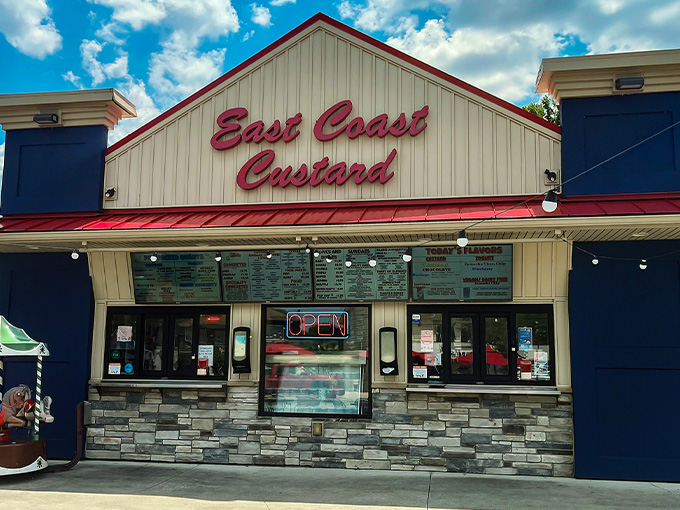
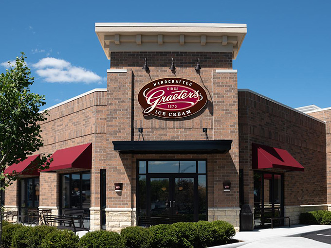
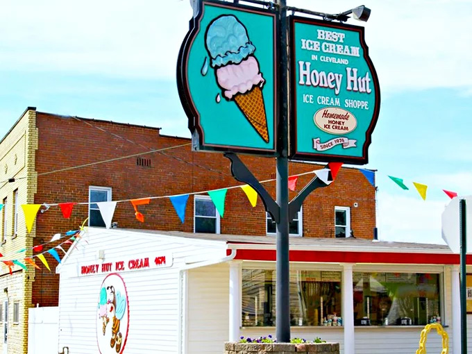
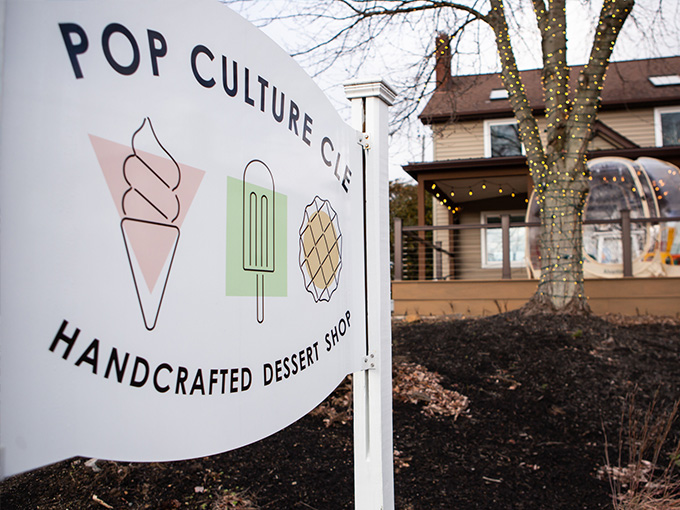
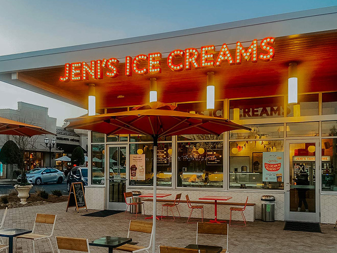
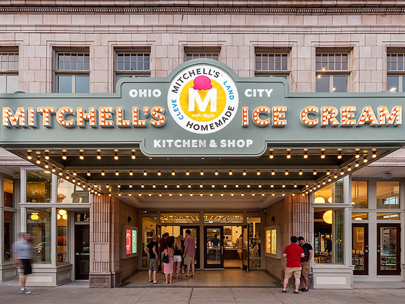

East Coast Custard
Super rich, smooth frozen custard served up with classic stand vibes. It lands at the bottom of the list simply because the flavor menu stays pretty small.
One sentence saying why you are the person to write this list. Real credentials only — "I have eaten all of them twice" is a real one.
Get the ScoopThe countdown
One sentence on what these six have in common — the thing that made them eligible at all.

Super rich, smooth frozen custard served up with classic stand vibes. It lands at the bottom of the list simply because the flavor menu stays pretty small.

An Ohio favorite famous for those massive, solid chocolate chips. It takes fifth spot for offering a big lineup of flavors along with solid gluten-free and dairy-free options.

A beloved local staple that sets itself apart by sweetening its ice cream base with real honey instead of refined sugar. That natural honey flavor gives classic scoops like vanilla a uniquely delicious twist.

Super fun gourmet popsicles and ice cream shaped into adorable designs with tons of flavors and custom toppings. It’s a blast to eat, though it loses a couple of spots because it gets pricey fast.

High-end artisan ice cream packed with intense, incredible flavors. It sits just shy of top spot because its high price tag makes it more of an occasional splurge.

The undisputed champ
The undisputed king of Cleveland ice cream, handmade right in Ohio City. The flavors are consistently perfect, the shop itself is awesome, and nothing else comes close.
Method
Two or three things, named. "Good" is not one of them.
The thing everyone else ranks by that you decided did not matter, and why.
I'm not wrong.